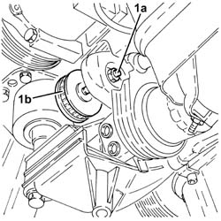

1092E14 counter-rotating shaft drive toothed belt tensioner - r + r with toothed belt removed
- Path
- Procedures > 10 ENGINE > 1092 VARIOUS ENGINE COMPONENT CONTROLS > 1092E counter-rotating shaft drive > 1092E14 counter-rotating shaft drive toothed belt tensioner - r + r with toothed belt removed
- Kind
- repair procedure (removal / refitting; the operation number is the code)
- Applies to
- all engines; all production periods
- Interactive page
- https://sloeber94.github.io/elrnDB-a156/en/#/3237716
Applies to: all engines; all production periods
1092E16 counter-rotating shaft drive toothed belt tensioner - r + r
Applies to: engines: 2.0 JTS, 2.0 JTS; all production periods
 Removing
Removing
 Refitting
Refitting1. Completely undo the nut (1a) loosened previously and remove the counter-balance shaft drive belt tensioner (1b).

Applies to: engines: 2.0 JTS, 2.0 JTS; all production periods
Refitting
RemovingPlace the counter-balance shaft belt tensioner back in its housing and secure it without tightening the nut.